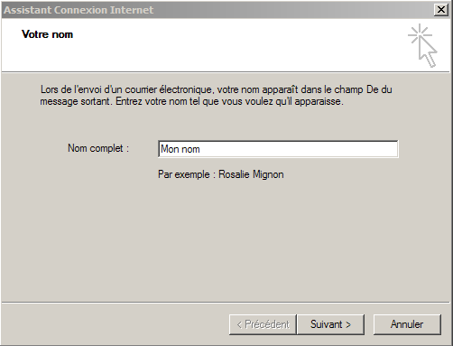
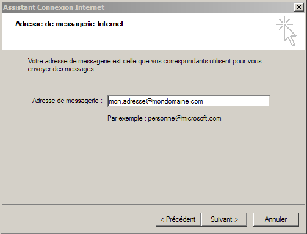
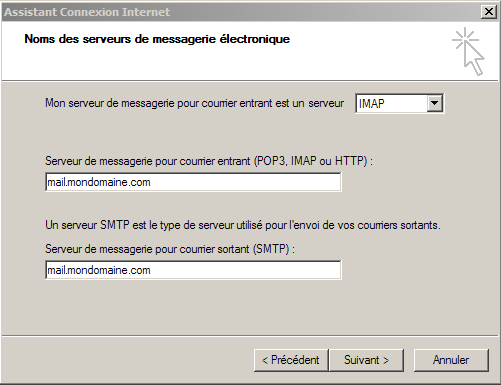
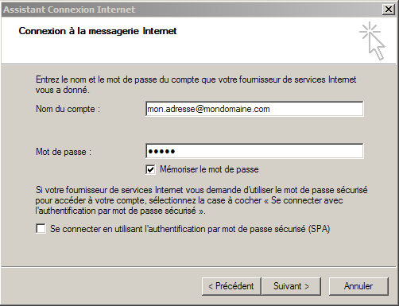
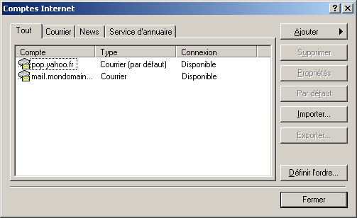
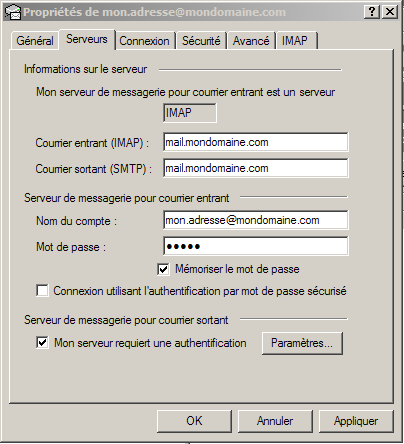

Configuration du client mail Outlook Express.Information de base de notre compte d'exemple :
Adresse email : "mon.adresse@mondomaine.com" Configuration d'Outlook express : Pour configurer outlook express, exécutez le. Une nouvelle fenêtre apparaît :
Cliquez sur le bouton "Ajouter" puis sur "Courrier...". Une nouvelle fenêtre apparaît :  "Nom complet :" mettre "Mon nom". Cliquez sur "Suivant >". Une nouvelle fenêtre apparaît :  "Adresse de messagerie" mettre "mon.adresse@mondomaine.com". Cliquez sur "Suivant >". Une nouvelle fenêtre apparaît :  Sélectionnez "IMAP". "Serveur de messagerie pour courrier entrant (POP3,IMAP ou HTTP) :" mettre "mail.bearstech.com". "Serveur de messagerie pour courrier sortant (SMTP) :" mettre "mail.bearstech.com". Cliquer sur "Suivant >". Une nouvelle fenêtre apparaît :  "Nom du compte :" mettre "mon.adresse@mondomaine.com". "Mot de passe :" mettre "a1b2c" qui sera masquée. Cliquez sur "Suivant >". Une nouvelle fenêtre apparaît :
Cliquez sur "Oui". Outlook est maintenant configuré pour se connecter sans chiffrage. Une nouvelle fenêtre apparaît :  Sélectionnez "mail.bearstech.com" puis appuyez sur le bouton "Propriétés". Une nouvelle fenêtre apparaît :
Rennomez "mail.bearstech.com" par "mon.adresse@mondomaine.com". Allez dans l'onglet "Serveurs" :  Cochez "Mon serveur requiert une authentification" Allez dans l'onglet "Avancé" :
Cochez les 2 cases "Ce serveur nécessite une connexion sécurisée (SSL)" et mettez "465" pour "Courrier sortant (SMTP)". Outlook est finalement configuré pour l'adresse email "Mon nom <mon.adresse@mondomaine.com>" avec une connexion sécurisée. Cliquez sur le bouton "OK" sité en bas de la fenêtre de dialogue. Une nouvelle fenêtre apparaît :
Pour terminer, cliquez sur le bouton "Oui". |